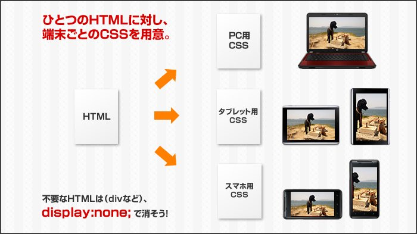

■header
<header> <h2 class="el">HeaderTitle</h2> </header>
セクション内でのヘッダ構造として定義する。セクションに対して一度だけ記述できる 通常はセクションの見出し(h1～h6)を含むように意図されているが必須ではない。 header要素はセクショニング要素ではないため、アウトラインを生成しない
■nav
<nav class="el">
<h2>NavTitle</h2>
<ul>
<li>コンテンツ1</li>
<li>コンテンツ2</li>
<li>コンテンツ3</li>
</ul>
</nav>
ナビゲーションを定義する。 ドキュメント内の全てのサイドメニューやリンクをnav要素にするのではなく、 主にサイト内のコンテンツを移動する主要なナビゲーションに使用する。
■section
<section class="el"> <h2>SectionTitle</h2> </section>
セクションを構成する汎用的な要素。 通常、各セクションはsection要素の子として見出し(h1～h6)を含めることによって識別される。
■footer
<footer class="el"> <h2>FooterTitle</h2> <p>フッターの内容</p> </footer>
セクションのフッタ構造を定義する。 セクションのフッタの場合と、ページ全体のフッタの場合がある。 必ずしもセクションの最後に記載する必要はない。
■address
<section> <h2>SectionTitle</h2> <address class="el">セクション要素の連絡先や住所</address> </section>
address要素が含まれているセクション要素の住所や連絡先を表す要素。 連絡先情報以外は含められない。
■article
<article class="el"> <header><h2>ArticleTitle</h2></header> <footer>AriticleFooter</footer> </article>
独立したコンテンツとして再配布可能、または再利用可能なコンテンツを記述する。 article要素が入れ子になる場合、内側の要素の内容は、外側の要素の内容と関連している内容となる。
■aside
<aside class="el"> <h2>AsideTitle</h2> </aside>
メインコンテンツ以外の内容を指定する要素。
■main
<main class="el"> <h2>MainTitle</h2> </main>
その文書のメインコンテンツであることを表す。 main要素はコンテンツを区分するが、文書のアウトラインに影響することも、 影響されることもない。 文書内でmain要素は1つのみ記述できる。 main要素の中には、header要素、nav要素、footer要素は含まない。
■ol,li
<ol class="el" start="10" reversed> <li>あ</li> <li>い</li> <li>う</li> <li>え</li> <li>お</li> </ol>
リストの並び順に意味や意図がある場合に使用する。
■ul,li
<ul class="el"> <li>あ</li> <li>い</li> <li>う</li> <li>え</li> <li>お</li> </ul>
順序が重要ではないリストを記述する場合に使用する。
■dl,dt,dd
<dl class="el"> <dt>データタイトル1</dt> <dd>データ1</dd> <dd>データ2</dd> <dd>データ3</dd> <dd>データ4</dd> <dd>データ5</dd> <dt>データタイトル2</dt> <dd>データ1</dd> <dd>データ2</dd> <dd>データ3</dd> <dd>データ4</dd> <dd>データ5</dd> </dl>
名前と値のグループを持つリストを記述する場合に使用する。 名前と値のグループは、用語とその定義、質問と回答などを記述する。 dt要素に名前、dd要素に値を記述する。
■div
div要素の内容
<div class="el"> <p>div要素の内容</p> </div>
特別な意味を持たない要素。どうしても他の要素を指定するのが適切でない場合のみ使用する。
■pre
先頭スペース2つ。改行。 インデント、改行もそのまま表示される(文書の先頭に半角スペースとタブがある)。
<pre> 先頭スペース2つ。改行。 インデント、改行もそのまま表示される。 </pre>
整形済みテキスト。インデント、改行もそのまま表示される。
■blockquote
blockquote要素の内容
<blockquote class="el" cite="http://www.google.co.jp"> blockquote要素の内容 </blockquote>
他から文書などを引用したセクションであることを表す。
■figure,figcaption
<figure class="el"> <figcaption>top figcaption</figcaption> <img src="./static/kaeru.gif"> </figure>
説明文の付いた図や表などを表す。figure要素はドキュメントの流れに影響を及ぼさない。
■a
リンク<a href="http://www.google.co.jp" target="_blank" rel="noreferrer" type="text/html" hreflang="ja">リンク</a>
href属性が存在しない場合、target属性、download属性、rel属性、hreflang属性、type属性は記述できない。 target="_blank"が非推奨ではなくなった。
■strong
重要文言 【重要文言入れ子】 普通の文言<strong class="el">重要文言 <strong>【重要文言入れ子】</strong> </strong> 普通の文言
入れ子にすることも可能。入れ子の階層が深いほど、その内容の重要性が増す。
■small
本文注意事項：注意！本文<small class="el">注意事項：注意！</small>
注意事項、免責事項等に使用する。重要度や強調の意味は無い。
■time
<time class="el">2015-03-03</time><br> <time class="el" datetime="2015-01-01">元旦(datetime属性あり)</time>
正確な日付や日時を記載する場合に使用する。 datetime属性を指定した場合、time要素の中に日付、日時以外の内容を記載できるが、 記載内容とdatetime属性で指定した日付、日時が一致する必要がある
■em
普通の文言強調文言普通の文言<em class="el">強調文言</em>
入れ子にすることも可能。入れ子の階層が深いほど、その内容の強調が増す。
■cite
引用した作品のタイトル<cite class="el">引用した作品のタイトル</cite>
作者名などには使用できない。
■q
引用した文書、テキストなど
<q class="el">引用した文書、テキストなど</q>
引用符で囲まれる。 q要素を使用せず、文中で引用符で囲むことも可能。 html要素でlang="ja"を指定していると「」で囲まれる模様。 cssで言語と引用符を指定可能。
■dfn
用語用語の定義
<p> <dfn class="el">用語</dfn> 用語の定義 </p>
用語の定義を記載する。dfn要素の最も近い親要素であるdl要素、 p要素などの中にdfn要素によって指定された用語の定義を含んでいる必要がある。
■abbr
HTML<abbr class="el" title="HyperText Markup Language">HTML</abbr>
略語または頭文字を表すために使用する。 title属性を指定する場合、正式名称を記載する。 title属性の内容がツールチップとして表示される。
■code
var s = 1 + 2;
<code class="el">var s = 1 + 2;</code>
プログラムなどのコードを記載する。
■var
Variable<var class="el">Variable</var>
変数を記載する。数式やプログラムで変数や定数を表す識別子、 物理量、関数のパラメータなどに使用する。
■samp
出力結果サンプル
<samp class="el">出力結果サンプル</samp>
プログラムを実行した際の何らかの出力結果の例や、 コンピュータが返す何らかのメッセージの例。
■kbd
ユーザーが入力する内容
<kbd class="el">ユーザーが入力する内容</kbd>
ユーザー入力を表す。通常はキーボード入力だが、 音声コマンドのような他の入力を表すことも可能。
■sub
log10X
log<sub class="el">10</sub>X
下付き文字を表す。 特定の意味を持つ表記方法のために使用する要素で、 単に文字が下付きになるという表示の見栄えのために使用してはならない。
■sup
100m2
100m<sup class="el">2</sup>
下付き文字を表す。 特定の意味を持つ表記方法のために使用する要素で、 単に文字が上付きになるという表示の見栄えのために使用してはならない。
■i
声や心の中で思ったこと
<i class="el">声や心の中で思ったこと</i>
声や心の中で思ったことなど、他と区別したいテキストを表す際に使用する。 i要素で異なる言語のテキスト部分をマークアップする場合、 lang属性で言語を指定する必要がある。
■b
他と区別したいテキスト
<b class="el">他と区別したいテキスト</b>
太字になる。 他と区別したいテキストを表す際に使用する。 他の要素でマークアップできない場合に使用する。
■u
スペルミスなど
<u class="el">スペルミスなど</u>
下線が付く。 ニュアンスなどがはっきりと伝わりにくかったり、 あえて本来の意味とは違う意味で使っているテキストや、 スペルミスなどを表す際に使用する。
■mark
ハイライト
<mark class="el" style="background-color:lightgreen;">ハイライト</mark>
ハイライトさせることにより注意が向くようにするために使用する。 重要性は表さない。
■ruby,rt,rp,rtc
漢字
<ruby class="el"> 漢字<rp>(</rp><rt>かんじ</rt><rp>)</rp> </ruby>
ルビ(ふりがな)を振る場合に使用する。
ルビ(ふりがな)を振る。
ルビ(ふりがな)をサポートしていないブラウザの場合用の文言を記述する
rtをグループ化する。1つのルビ対象テキストに対して、 複数のルビを適用したい場合などに使用する。
■bdi
rightあいうえお
<bdi class="el" title="The bdi element is not supported by browsers yet">right</bdi>あいうえお
テキストの一部分を異なる文字の表記方向に指定する場合に使用する。
■wbr
aaaaaaaaaaaaaaaaaaaaaa⇒
aaaaaaaaaaaaaaaaaaaaaa⇒<wbr class="el">return
コンテンツの表示領域が小さくなったときに折り返す位置を明示的に指定する場合に使用する。
■ins
追加されたテキストや画像
<ins class="el">追加されたテキストや画像</ins>
追加された部分であることを示す際に使用する。
■del
削除箇所 削除箇所
<del class="el">削除箇所 削除箇所</del>
削除された部分であることを示す際に使用する。
■s
正確ではないテキスト
<s class="el">正確ではないテキスト</s>
テキストが正確でないことを示す場合に使用する。
■img
<img src="./static/kaeru.gif" alt="カエル">
画像を埋め込む際に使用する。 src属性は必須。alt属性は必須でなくなった。
■iframe
<iframe src="http://www.html5.jp/" width="800" height="500" sandbox="allow-same-origin allow-forms allow-scripts"></iframe>
インラインフレームでコンテンツを表示する場合に使用する。 seamless属性はインラインフレームのコンテンツを 親コンテンツの一部のように表示する際に使用するが、 現状メジャーなブラウザでもサポートされていない模様。
sandbox属性は、悪意あるコンテンツから被害を受けるのを避けるために、 フレーム内コンテンツの表示に制限を加える際に使用する。 指定できる値は下記(スペースで区切って複数指定可)。
| 値 | 概要 |
|---|---|
| allow-same-origin | フレーム内のコンテンツの出処が、親ページと同じものとされる |
| allow-forms | フレーム内のコンテンツのフォームを有効にする |
| allow-scripts | フレーム内のコンテンツのスクリプトを有効にする。ただし、ポップアップは無効 |
■embed
<embed src="./static/wave.swf" type="application/x-shockwave-flash">
外部アプリケーションやインタラクティブなコンテンツ、 例えば、Flashなどの プラグインを必要とするデータをHTML文書に埋め込む際に使用する。
■object
<object data="./static/kaeru.gif" width="350" height="300">object要素がサポートされていません。</object>
文書に外部リソースを埋め込む際に使用する。 embed要素がプラグインを必要とするデータを埋め込むのに対して、 objectには外部リソース全般を指定することができる。
■param
<object type="application/x-shockwave-flash"> <param name="movie" value="./static/kaeru02.swf"> <param name="bgcolor" value="#87ceeb"> </object>
object要素の子要素として、object要素で指定されたオブジェクトのパラメータを指定する。
■video,source
<video poster="./static/cat.jpg" preload="none" controls> <source src="./static/sample.ogv"> <source src="./static/sample.mp4"> <source src="./static/sample.webm"> <track kind="subtitles" src="./static/developerStories-subtitles-en.vtt"> </video> <video poster="./static/cat.jpg" preload="none" controls src="./static/sample.mp4"> <track kind="subtitles" src="./static/developerStories-subtitles-en.vtt" default> </video>
動画を読み込み、再生する際に使用する。 現状、ブラウザによってサポートされている動画形式が異なる。
source要素は動画や音声などのメディアファイルのURLや種類を指定する際に、 video要素、audio要素などの中で子要素として使用する。
■canvas
<head>
<script type="text/javascript">
function renderCanvas(){
var canvas = document.getElementById('canvas');
if(canvas.getContext){
var context = canvas.getContext('2d');
context.fillRect(20,40,50,100);
context.fillStyle = '#ff3333';
context.arc(150,75,60,Math.PI*1,Math.PI*2,true);
context.fill();
}
}
</script>
</head>
<body onload="renderCanvas()">
<canvas id="canvas">Canvas表示不可の場合に表示される文言</canvas>
グラフィックを描画する際に使用する。
■map,area

<img src="./static/japan1.gif" alt="日本地図" usemap="#shape1" id="shape1">
<map name="shape1">
<area shape="poly" coords="305,11,390,11,390,66,330,66,330,79,305,79" href="javascript:alert('北海道(図)');" alt="北海道">
<area shape="poly" coords="302,83,349,83,349,141,343,141,343,169,279,169,279,149,291,150,291,141,302,141" href="javascript:alert('東北(図)');" alt="東北">
<area shape="poly" coords="286,168,342,169,342,177,347,177,348,236,332,235,332,213,319,213,320,227,295,228,297,202,291,202,291,191,285,191" href="javascript:alert('関東(図)');" alt="関東">
<area shape="poly" coords="278,150,279,169,287,169,287,191,291,190,291,202,296,202,296,249,239,248,238,195,208,195,208,180,243,180,242,135,254,135,254,150" href="javascript:alert('中部(図)');" alt="中部">
<area shape="poly" coords="207,180,207,195,238,194,238,252,182,252,181,228,171,229,171,219,159,219,159,180" href="javascript:alert('近畿(図)');" alt="近畿">
<area shape="rect" coords="101,179,159,220" href="javascript:alert('中国(図)');" alt="中国">
<area shape="rect" coords="109,226,169,259" href="javascript:alert('四国(図)');" alt="四国">
<area shape="poly" coords="33,195,87,195,87,217,99,218,98,293,84,293,77,290,65,290,31,280,14,281,14,262,33,226" href="javascript:alert('九州(図)');" alt="九州">
<!--AREA for text-->
<area shape="rect" coords="132,30,209,48" href="javascript:alert('北海道(テキスト)');" alt="北海道">
<area shape="rect" coords="132,58,209,76" href="javascript:alert('東北(テキスト)');" alt="東北">
<area shape="rect" coords="132,86,209,104" href="javascript:alert('関東(テキスト)');" alt="関東">
<area shape="rect" coords="132,114,209,132" href="javascript:alert('中部(テキスト)');" alt="中部">
<area shape="rect" coords="31,30,105,48" href="javascript:alert('近畿(テキスト)');" alt="近畿">
<area shape="rect" coords="31,58,105,76" href="javascript:alert('中国(テキスト)');" alt="中国">
<area shape="rect" coords="31,86,105,104" href="javascript:alert('四国(テキスト)');" alt="四国">
<area shape="rect" coords="31,114,105,132" href="javascript:alert('九州(テキスト)');" alt="九州">
</map>
任意のimg要素のイメージマップを定義する。 map要素内に複数のarea要素を配置する。 また、map要素の中には、その他のコンテンツも配置することが可能。 id属性を指定する場合は、name属性と同値にしなければならない。
画像内にリンクを指定する場合にmap要素内に指定する。 HTML5ではリンク領域はarea要素でのみ指定が可能となった。 また、input要素との関連付けが不可となった。
【ara要素のshape属性について】 ara要素のshape属性には画像の座標を指定する。 「circle(円)」を指定した場合、coords属性の値は3つの整数のリストとなる。 ・1つ目の整数は画像の左端から円の中心までのピクセル距離 ・2つ目の整数は画像の上端から円の中心までのピクセル距離 ・3つ目の整数は円の半径のピクセル距離 「poly(多角形)」を指定した場合、coords属性の値は少なくとも 6つ以上の偶数個の整数のリストとなる。 整数2つごとに順番にペアとなって座標が決定されるが、 整数のペアが3組あれば三角形、4組あれば四角形…となる。 「rect(四角形)」を指定した場合、coords属性の値は4つの整数のリストとなる。 polyで四角形を指定する場合は8つの整数のリストが必要だが、 rectで四角形を指定する場合は4つの整数のリストでよい。 「default」のキーワードで初期状態を指定している場合には、coords属性は指定できない。 この場合、画像全体がハイパーリンク領域となる。 ※ペイントで座標取得可能
■table,thead,tbody,tfoot,th,td
| No | Name | Code | Col1 | Col2 |
|---|---|---|---|---|
| 1 | Name1 | Code1 | Col11 | Col12 |
| 2 | Name2 | Code2 | Col21 | Col22 |
| footer1 | footer2 | footer3 | footer4 | footer5 |
<table class="el"> <thead> <tr> <th>No</th> <th>Name</th> <th>Code</th> <th>Col1</th> <th>Col2</th> </tr> </thead> <tbody> <tr> <td>1</td> <td>Name1</td> <td>Code1</td> <td>Col11</td> <td>Col12</td> </tr> <tr> <td>2</td> <td>Name2</td> <td>Code2</td> <td>Col21</td> <td>Col22</td> </tr> </tbody> <tfoot> <tr> <td>footer1</td> <td>footer2</td> <td>footer3</td> <td>footer4</td> <td>footer5</td> </tr> </tfoot> </table>
表組みを作成する際に使用する。レイアウトのために使用すべきではない。
表のヘッダを定義する。table要素内に1つのみ記述可能。
表の本体を定義する。table要素内に複数記述可能。 なお、table要素の直下にtr要素が記述されると、 tbody要素が暗黙的に定義される。
表のフッタを定義する。table要素内に1つのみ記述可能。
表の見出しを表す。scope属性によって、どのデータの見出しかを指定することができる。
【row】 見出しセルは同じ横行の後続のセルに適用 【col】 見出しセルは同じ縦列の後続のセルに適用 【rowgroup】 見出しセルは同じ横行の後続の全セルに適用 【colgroup】 見出しセルは同じ縦列の後続の全セルに適用
表のデータセルを表す。header属性によって、ヘッダ(th要素)を指定できる。
■caption
| No | Name | Code | Col1 | Col2 |
|---|---|---|---|---|
| 1 | Name1 | Code1 | Col11 | Col12 |
| 2 | Name2 | Code2 | Col21 | Col22 |
| footer1 | footer2 | footer3 | footer4 | footer5 |
<table> <caption class="el">キャプション</caption> <thead> <tr> <th>No</th> <th>Name</th> <th>Code</th> <th>Col1</th> <th>Col2</th> </tr> </thead> <tbody> <tr> <td>1</td> <td>Name1</td> <td>Code1</td> <td>Col11</td> <td>Col12</td> </tr> <tr> <td>2</td> <td>Name2</td> <td>Code2</td> <td>Col21</td> <td>Col22</td> </tr> </tbody> <tfoot> <tr> <td>footer1</td> <td>footer2</td> <td>footer3</td> <td>footer4</td> <td>footer5</td> </tr> </tfoot> </table>
表のタイトルを表す。table要素の子要素のため必ずtable要素が親要素として必要となり、 1つのtable要素に対して1つのみ指定可能。 table要素がfigure要素内に記述されている場合はcaption要素ではなく、 figcaption要素を使用する。
■colgroup
| No | Name | Code | Col1 | Col2 |
|---|---|---|---|---|
| 1 | Name1 | Code1 | Col11 | Col12 |
| 2 | Name2 | Code2 | Col21 | Col22 |
| footer1 | footer2 | footer3 | footer4 | footer5 |
<table> <caption>キャプション</caption> <colgroup span="2" style="background-color:#ff3333;"> <colgroup span="3" style="background-color:#1e90ff;"> <thead> <tr> <th>No</th> <th>Name</th> <th>Code</th> <th>Col1</th> <th>Col2</th> </tr> </thead> <tbody> <tr> <td>1</td> <td>Name1</td> <td>Code1</td> <td>Col11</td> <td>Col12</td> </tr> <tr> <td>2</td> <td>Name2</td> <td>Code2</td> <td>Col21</td> <td>Col22</td> </tr> </tbody> <tfoot> <tr> <td>footer1</td> <td>footer2</td> <td>footer3</td> <td>footer4</td> <td>footer5</td> </tr> </tfoot> </table>
表の列をグループ化する。グループ化した列には 同じ属性やスタイルを適用することができる。 グループ化する列の個数をspan属性で指定する。 colgroup要素内にcol要素を配置する場合はspan属性は指定できない(col要素側で指定する)。
■col
| No | Name | Code | Col1 | Col2 |
|---|---|---|---|---|
| 1 | Name1 | Code1 | Col11 | Col12 |
| 2 | Name2 | Code2 | Col21 | Col22 |
| footer1 | footer2 | footer3 | footer4 | footer5 |
<table> <caption>キャプション</caption> <colgroup> <col span="3" style="background-color:#ff3333;"> <col span="2" style="background-color:#1e90ff;"> </colgroup> <thead> <tr> <th>No</th> <th>Name</th> <th>Code</th> <th>Col1</th> <th>Col2</th> </tr> </thead> <tbody> <tr> <td>1</td> <td>Name1</td> <td>Code1</td> <td>Col11</td> <td>Col12</td> </tr> <tr> <td>2</td> <td>Name2</td> <td>Code2</td> <td>Col21</td> <td>Col22</td> </tr> </tbody> <tfoot> <tr> <td>footer1</td> <td>footer2</td> <td>footer3</td> <td>footer4</td> <td>footer5</td> </tr> </tfoot> </table>
複数の列に同じ属性やスタイルを適用する際に使用する。 span属性を指定していないcolgroup要素内に配置する。 colgroup要素と異なり、グループ化するという意味は持たない。
■form
<form id="frm1" name="frm1" method="post" accept-charset="UTF-8" target="_blank" novalidate autocomplete="on"> <input type="text" id="txt1"> <input type="text" id="txt2"> </form>
入力フォームをまとめ、入力されたデータをサーバに送信することが可能。 HTML5よりform要素外に入力フォームを配置することができるようになった (入力フォーム要素のform属性に、form要素のid属性値を指定する)。
■fieldset,legend,label
<form id="frm2" name="frm2" method="post" accept-charset="UTF-8" target="_blank" novalidate autocomplete="on"> <fieldset id="fd1" class="el" disabled> <legend>無効な入力フォーム</legend> <p><label for="txt21">テキスト1：<input type="text" id="txt21"></label> <p><label for="txt22">テキスト2：<input type="text" id="txt22"></label> </fieldset> <fieldset id="fd2" class="el"> <legend>有効な入力フォーム</legend> <p><label for="txt31">テキスト1：<input type="text" id="txt31"></label> <p><label for="txt32">テキスト2：<input type="text" id="txt32"></label> </fieldset> </form>
複数の入力フォームをグループ化する場合に指定する。 fieldset要素にdisabled属性を指定すると fieldset要素内のすべての入力フォームが無効になる。
fieldset要素内の最初に記述し、 グループ化された入力フォームのキャプションを指定する。
入力フォームに項目名などのラベルを付ける。
■input,datalist
<form id="inp" name="inp" method="post" accept-charset="UTF-8" novalidate autocomplete="on">
hidden：<input type="hidden" id="ihidden" name="ihidden" value="ihidden">
label for="itext">text：<input type="text" id="itext" name="itext" placeholder="text" maxlength="10" form="inp" required list="itextdl" accesskey="t"></label>
<datalist id="itextdl">
<option value="val1">val1</option>
<option value="val2">val2</option>
<option value="val3">val3</option>
</datalist>
<label for="isearch">search：<input type="search" id="isearch" name="isearch" placeholder="search"></label>
<label for="itel">tel：<input type="tel" id="itel" name="itel" placeholder="tel"></label>
<label for="iurl">url：<input type="url" id="iurl" name="iurl" placeholder="url"></label>
<label for="iemail">email：<input type="email" id="iemail" name="iemail" placeholder="email" pattern="正規表現でパターンを指定する" value="email@email.com"></label>
<label for="ipassword">password：<input type="password" id="ipassword" name="ipassword" value="aaaaaaaaaa"></label>
<label for="idatetime">datetime：<input type="datetime" id="idatetime" name="idatetime" title="value属性、min属性、max属性はYYYY-MM-DDThh:mm:ss形式で指定する。The datetime input type is not supported in all browsers"></label>
<label for="idate">date：<input type="date" id="idate" name="idate" min="2015-01-01" max="2016-12-31" title="value属性、min属性、max属性はYYYY-MM-DD形式で指定する。The date input type is not supported in all browsers"></label>
<label for="imonth">month：<input type="month" id="imonth" name="imonth" min="2015-01" max="2016-12" title="value属性、min属性、max属性はYYYY-MM形式で指定する。The month input type is not supported in all browsers"></label>
<label for="iweek">week：<input type="week" id="iweek" name="iweek" min="2015-W01" max="2016-W10" title="value属性、min属性、max属性はYYYY-WNN形式で指定する(NNは01～53)。The week input type is not supported in all browsers"></label>
<label for="itime">time：<input type="time" id="itime" name="itime" min="00:00" max="01:00" title="value属性、min属性、max属性はhh:mm形式で指定する。The time input type is not supported in all browsers"></label>
<label for="inumber">number：<input type="number" id="inumber" name="inumber" min="-10" max="20" step="5"></label>
<label for="irange">range：<input type="range" id="irange" name="irange" min="-10" max="20" step="5"></label>
<label for="icolor">color：<input type="color" id="icolor" name="icolor" title="The color input type is not supported in all browsers"></label>
<label for="icheckbox">checkbox：<input type="checkbox" id="icheckbox" name="icheckbox">checkbox</label>
radio：
<label for="iradio1"><input type="radio" id="iradio1" name="iradio">radio1</label>
<label for="iradio2"><input type="radio" id="iradio2" name="iradio">radio2</label>
<label for="iradio3"><input type="radio" id="iradio3" name="iradio">radio3</label>
<label for="ifile">file：<input type="file" id="ifile" name="ifile" multiple></label>
<label for="isubmit">submit：<input type="submit" id="isubmit" name="isubmit" value="submit" formmethod="post" formtarget="window1"></label>
<label for="iimage">image：<input type="image" id="iimage" name="iimage" src="./static/btn.jpg" width="80" height="80" formmethod="post" formtarget="window1" alt="ボタン"></label>
<label for="ireset">reset：<input type="reset" id="ireset" name="ireset" value="reset"></label>
<label for="ibutton">button：<input type="button" id="ibutton" name="ibutton" value="button"></label>
</form>
入力フォームを作成する。
入力フォームのための入力候補を定義する場合に使用する(本HTMLではtextで使用している)。 入力候補はoption要素で指定する。 他の入力フォームの選択肢として表示されるため、datalist自体は表示されない。
■button
<button type="submit" id="bsub" name="bsub" class="el">submit</button> <button type="reset" id="brst" name="brst" class="el">reset</button> <button type="button" id="bbtn" name="bbtn" class="el">button</button>
ボタンを作成する場合に使用する。
■select,option
<select id="sct1" name="sct1" class="el" size="5" multiple> <option value="1">選択肢1</option> <option value="2">選択肢2</option> <option value="3">選択肢3</option> <option value="4">選択肢4</option> <option value="5">選択肢5</option> <option value="6">選択肢6</option> <option value="7">選択肢7</option> <option value="8">選択肢8</option> <option value="9">選択肢9</option> <option value="10">選択肢10</option> </select>
セレクトボックスを作成する場合に使用する。
select要素内の選択肢を作成する場合に使用する。
■optgroup
<select id="sct2" name="sct2" size="5" multiple> <optgroup label="opt1" class="el"> <option value="1">選択肢1</option> <option value="2">選択肢2</option> <option value="3">選択肢3</option> </optgroup> <option value="4">選択肢4</option> <option value="5">選択肢5</option> <option value="6">選択肢6</option> <option value="7">選択肢7</option> <option value="8">選択肢8</option> <option value="9">選択肢9</option> <option value="10">選択肢10</option> </select>
option要素をグループ化する場合に使用する。
■textarea
<textarea id="txa1" name="txa1" cols="35" rows="5" maxlength="20" placeholder="textarea rows:5 cols:35" wrap="hard" class="el"></textarea>
テキストエリアを作成する場合に使用する。
■keygen
<keygen id="keg1" name="keg1" challenge="公開鍵と一緒に送信する任意の文字列">
鍵のペア(公開鍵と秘密鍵)の生成を行う。 フォームが送信されると秘密鍵はローカルに格納され、 公開鍵はパッケージされたサーバに送信される。
■output
<output id="out1" name="out1" class="el">計算結果</output>
計算結果の出力欄を作成する場合に使用する。 出力だけを目的とした要素のため、output要素値が送信されることはない。
■progress
<progress id="pgs1" max="100" value="50" class="el">プログレスバー非対応です</progress>
プログレスバーを作成する場合に使用する。 progress要素内には非対応のブラウザの場合に表示するコンテンツを記述する。
■meter
<meter id="mtr1" value="50" min="0" max="100" low="20" high="50" optimum="50">メータ非対応です</meter>
あらかじめわかっている範囲内にある数量や割合を表す場合に使用する。 low(最も低い領域の上限値)、high(最も高い領域の上限値)、 optimum(最適値)を指定することにより、領域が3つに分けられる。
●バーの色：黄色(lowとhighの値外) value ＜ low or value ＞ high ●バーの色：緑(lowとhighの値内) value ＞＝ low AND value ＝＜ high
■details,summary
<details open class="el"> <summary>details要素の内容の要約や凡例</summary> 展開される内容 </details>
details要素はユーザ操作により表示、非表示を指定できるディスクロジャーウィジェットを 作成する場合に使用する。 summary要素は親要素であるdetails要素の内容の要約や凡例を記述する場合に使用する。
グローバル属性とは、どの要素にも使用できる属性のこと。 主要なグローバル属性は下記。
| No | 属性名 | 概要 |
|---|---|---|
| 1 | accesskey | 要素にアクセスキーを割り当てる属性。 |
| 2 | class | 要素にクラスを割り当てる属性。 |
| 3 | contenteditable | 要素の内容を編集可能かどうかを指定する属性。 |
| 4 | contextmenu |
要素のコンテキストメニューを指定する属性。 (menu要素のid値をcontextmenu属性に指定する) |
| 5 | data-* | 要素にカスタム（独自、オリジナル）・データを格納する属性。 |
| 6 | datetime | ins要素、del要素での日付、日時を指定する属性。 |
| 7 | dir |
要素内のテキストの方向を指定する属性。 dir="ltr" ⇒ 左から右 dir="rtl" ⇒ 右から左 |
| 8 | drragable | 要素をドラッグ可能かどうかを指定する属性。 |
| 9 | hidden | 関連性がある要素かどうかを指定する属性。 |
| 10 | id | 要素に固有のidを指定する属性。 |
| 11 | lang | 要素内の言語コードを指定する属性。 |
| 12 | spellcheck | 要素内のテキストのスペルチェックをするかしないかを指定する属性。 |
| 13 | style | スタイルシートを要素に直接指定するための属性。 |
| 14 | tabindex | 要素のタブインデックスを指定する属性。 |
| 15 | title | 要素に関する補足情報を指定する属性。 |
HTML5で廃止された要素と属性は下記。
| No | 廃止された要素 | 概要・代替 |
|---|---|---|
| 1 | acronym | 頭文字をとった略語をあらわす要素。abbr要素で代替する。 |
| 2 | applet | Javaアプレットを埋め込みための要素。object要素で代替する。 |
| 3 | basefont | 基本となるフォントサイズなどを指定する要素。CSSで代替する。 |
| 4 | big | 文字サイズを拡大する要素。CSSで代替する。 |
| 5 | center | 文字の配置を中央にする要素。CSSで代替する。 |
| 6 | dir | ディレクトリ型リストを指定する要素。ul要素で代替する。 |
| 7 | font | フォント関連を指定する要素。CSSで代替する。 |
| 8 | frame | フレームに分割して表示する要素。iframe要素等で代替する。 |
| 9 | frameset | frame要素廃止に伴い廃止。代替なし。 |
| 10 | noframes | frame要素廃止に伴い廃止。代替なし。 |
| 11 | isindex | テキスト入力欄を作成する要素。form要素で代替する。 |
| 12 | strike | テキストに取消線を引く要素。del要素で代替する。 |
| 13 | tt | 等倍フォントで表示する要素。CSSで代替する。 |
| 14 | blink | フォントを点滅させる要素。代替なし(text-decoration:blinkはブラウザによっては実装していない)。 |
| 15 | noembd | embedタグに対応していない場合に表示する内容を記載する要素。廃止。代替なし |
| 16 | nobr | 途中改行を無効にする要素。代替なし。 |
| No | 要素 | 廃止された属性 |
|---|---|---|
| 1 | a | charset |
| 2 | rev | |
| 3 | shape | |
| 4 | coords | |
| 5 | area | nohref |
| 6 | body | background |
| 7 | bgcolor | |
| 8 | text | |
| 9 | link | |
| 10 | vlink | |
| 11 | alink | |
| 12 | br | clear |
| 13 | caption | align |
| 14 | col | width |
| 15 | align | |
| 16 | valign | |
| 17 | charset | |
| 18 | charoff | |
| 19 | colgroup | width |
| 20 | align | |
| 21 | valign | |
| 22 | charset | |
| 23 | charoff | |
| 24 | div | align |
| 25 | dl | compact |
| 26 | form | accept |
| 27 | h1～h6 | align |
| 28 | head | profile |
| 29 | hr | size |
| 30 | width | |
| 31 | align | |
| 32 | noshade | |
| 33 | html | version |
| 34 | iframe | longdesc |
| 35 | scrolling | |
| 36 | frameborder | |
| 37 | marginwidth | |
| 38 | marginheight | |
| 39 | align | |
| 40 | img | longdesc |
| 41 | name | |
| 42 | align | |
| 43 | hspace | |
| 44 | vspace | |
| 45 | input | align |
| 46 | usemap | |
| 47 | ismap | |
| 48 | legend | align |
| 49 | li | type |
| 50 | link | rev |
| 51 | charset | |
| 52 | target | |
| 53 | menu | compact |
| 54 | meta | scheme |
| 55 | object | classid |
| 56 | codetype | |
| 57 | archive | |
| 58 | codebase | |
| 59 | standby | |
| 60 | declare | |
| 61 | align | |
| 62 | border | |
| 63 | hspacce | |
| 64 | vspace | |
| 65 | ol | compact |
| 66 | p | align |
| 67 | param | valuetype |
| 68 | type | |
| 69 | pre | width |
| 70 | table | width |
| 71 | frame | |
| 72 | rules | |
| 73 | cellspacing | |
| 74 | cellpadding | |
| 75 | align | |
| 76 | bgcolor | |
| 77 | align | |
| 78 | valign | |
| 79 | char | |
| 80 | charoff | |
| 81 | td | align |
| 82 | valign | |
| 83 | char | |
| 84 | charoff | |
| 85 | abbr | |
| 86 | scope | |
| 87 | axis | |
| 88 | width | |
| 89 | height | |
| 90 | bgcolor | |
| 91 | nowrap | |
| 92 | tfoot | align |
| 93 | valign | |
| 94 | char | |
| 95 | charoff | |
| 96 | th | align |
| 97 | valign | |
| 98 | char | |
| 99 | charoff | |
| 100 | abbr | |
| 101 | axis | |
| 102 | width | |
| 103 | height | |
| 104 | bgcolor | |
| 105 | nowrap | |
| 106 | thead | align |
| 107 | valign | |
| 108 | char | |
| 109 | charoff | |
| 110 | tr | align |
| 111 | valign | |
| 112 | char | |
| 113 | charoff | |
| 114 | bgcolor | |
| 115 | ul | type |
| 116 | compact |
HTMLにメタデータを埋め込むことにより、プログラムによって自動的に情報を 収集・分析することができるプラットホームにしていく構想を セマンティックWebと呼ぶ。 HTMLにメタデータを埋め込む技術としては、HTML Microdata、RDFa、RDFa Liteなどがある。
■HTML Microdata
HTML5と同時に策定されたため、JavaScriptによるAPIが整備されていたり、 JSONへの変換方法があらかじめ規定されていたりと、 JavaScriptアプリから使いやすい仕様になっている。 GoogleやMicrosoftの検索エンジンもHTML Microdataに対応しており、 HTMLにメタデータを埋め込む技術としてはデファクトスタンダードになっている。 HTML Microdataを用いてメタデータをHTMLに埋め込むには、 任意のHTMLに対して下記のような属性を付与する。
| No | 属性 | 概要 |
|---|---|---|
| 1 | itemscope | アイテムを定義する範囲を表す。 |
| 2 | itemtype | アイテムのデータ型を表す。 |
| 3 | itemprop | アイテムのプロパティを表す。 |
| 4 | itemid | アイテムのグローバルなIDを表す。 |
| 5 | itemref | 他のアイテムのIDを参照する。 |
<p itemscope itemtype="http://schema.org/Person" itemid="http://example.com/pepple#test"> 名前は<span itemprop="name">テスト</span>です。 TELは<span itemprope="telephone">090-0000-0000</span>です。 </p>
■RDFa、RDFa Lite
HTML、XHTMLに属性を付与する事でメタデータを指定できる仕様。 RDFa、RDFa Liteで表される情報はアイテムと呼ばれ、 アイテムが持つ属性はプロパティと呼ばれる。 アイテムを定義するには任意のHTML要素に対して下記のような属性を付与する。
| No | 属性 | 概要 |
|---|---|---|
| 1 | vocab | メタデータの語彙(ボキャブラリ)を表す識別子。 |
| 2 | typeof | アイテムのデータ型を表す。 |
| 3 | property | アイテムのプロパティを表す。 |
| 4 | resource | Webページ内でアイテムに任意のIDを付与する。 |
| 5 | prefix | 1つのアイテム内で、vocab属性で指定した以外の 語彙(ボキャブラリ)を使用したい場合に、 その語彙(ボキャブラリ)を指定する。 |
<p vocab="http://schema.org" typeof="Person" prefix="ov:http://open.vocab.org/terms/" resource="#test"> 名前は<span property="name">テスト</span>です。 TELは<span property="telephone">090-0000-0000</span>です。 好きな動物は<span property="ov:preferredAnimal">犬</span>です。 </p>
■カスタムデータ属性
属性名の接頭辞として「data-」を付与することにより カスタムデータ属性を利用することができる。 HTMLの属性として使用できる文字であれば、どんな属性名でもよい。
<p data-ppp="ppp">テスト</p>
■data URI
「data:」で始まるURIで、データの内容そのものをURI文字列内に埋め込むことができる。 通常はsrcに画像のURLを指定するが、その場合、画像ファイル用のHTTPリクエストが発行される。 data URIを使用すればHTTPリクエストを減らすことができる。 デメリットとしては下記のようなものがある。
書式は下記。
data:[MIMEタイプ][;charset=文字セット][;base64],データ
<img src="data:image/jpeg;base64,/df82s/daj1AH・・・・・N9S1GMVB//2Q==" alt="">
レスポンシブWebデザインとは、 共通のHTMLをCSS3のメディアクエリ(Media Queries)で制御し、 デバイスの画面サイズに合わせてレイアウトを最適化して表示する手法。
| メリット | デメリット |
|---|---|
|
|
レスポンシブWebデザインの主な手法は下記。
メディア(デバイス)ごとに適用するスタイルを変更する手法。
画面やレイアウト幅に合わせて画像サイズを拡大、 縮小してレイアウト調整する手法。 imgタグに「max-width: 100%」等を指定する。
グリッドデザイン(ページをグリッドで区切り、 pxでレイアウトする手法)を、リキッドデザイン(可変)対応したもの。
ページをデバイスの横幅に合わせ、サイズを%などで調整するデザイン。
■メディアタイプ
メディアの種類を指定する。
<link rel="stylesheet" href="test.css" type="text/css" media="print">
「media=""」の部分をメディアタイプといい、メディアの種類を指定する。 メディアタイプは下記。
| メディアタイプ | 概要 |
|---|---|
| all | 全てのメディア |
| screen | 一般的なディスプレイ |
| speech | 音声読み上げブラウザ |
| braille | 点字ディスプレイなどのデバイス |
| embossed | 点字プリンタ |
| handheld | ハンドヘルドデバイス(携帯用機器) |
| 印刷用プリンタ | |
| projection | プロジェクタ |
| tty | 文字幅固定のデバイス |
| tv | テレビ |
■メディア特性
表示方法に関する情報を記述するために使用される。 widthやheightなどの特性によって異なるスタイルを適用することができる。 メディア特性は下記。
| メディア特性 | 概要 | 指定値 |
|---|---|---|
| width | 表示領域(viewport)の横幅 | 数値 |
| min-width | 表示領域(viewport)の最小横幅 | 数値 |
| max-width | 表示領域(viewport)の最大横幅 | 数値 |
| height | 表示領域(viewport)の高さ | 数値 |
| min-height | 表示領域(viewport)の最小高さ | 数値 |
| max-height | 表示領域(viewport)の最大高さ | 数値 |
| device-width | デバイスの横幅 | 数値 |
| min-device-width | デバイスの最小横幅 | 数値 |
| max-device-width | デバイスの最大横幅 | 数値 |
| device-height | デバイスの高さ | 数値 |
| min-device-height | デバイスの最小高さ | 数値 |
| max-device-height | デバイスの最大高さ | 数値 |
| orientation | デバイスの向き | portrait⇒縦長 landscape⇒横長 |
| aspect-ratio | 表示領域の横縦比 | 横縦比(例：16/9) |
| min-aspect-ratio | 表示領域の最小横縦比 | 横縦比(例：16/9) |
| max-aspect-ratio | 表示領域の最大横縦比 | 横縦比(例：16/9) |
| device-aspect-ratio | デバイスの横縦比 | 横縦比(例：16/9) |
| min-device-aspect-ratio | デバイスの最小横縦比 | 横縦比(例：16/9) |
| max-device-aspect-ratio | デバイスの最大横縦比 | 横縦比(例：16/9) |
| color | デバイスのカラー・コンポーネントあたりのビット数 | 整数 |
| min-color | デバイスのカラー・コンポーネントあたりの最小ビット数 | 整数 |
| max-color | デバイスのカラー・コンポーネントあたりの最大ビット数 | 整数 |
| color-index | デバイスのカラー参照テーブルの項目数 | 整数 |
| min-color-index | デバイスのカラー参照テーブルの最小項目数 | 整数 |
| max-color-index | デバイスのカラー参照テーブルの最大項目数 | 整数 |
| monochrome | 白黒のフレーム・バッファーにおけるピクセルあたりのビット数 | 整数 |
| min-monochrome | 白黒のフレーム・バッファーにおけるピクセルあたりの最小ビット数 | 整数 |
| max-monochrome | 白黒のフレーム・バッファーにおけるピクセルあたりの最大ビット数 | 整数 |
| resolution | デバイスの解像度 | dpi OR dpcmで指定 |
| min-resolution | デバイスの最小解像度 | dpi OR dpcmで指定 |
| max-resolution | デバイスの最大解像度 | dpi OR dpcmで指定 |
| scan | TVの走査方式 | progressive interlace |
| grid | デバイスがグリッドベースかそれ以外か | 1⇒グリッドベース 0⇒それ以外 |
■メディアクエリの書式
メディアクエリではand演算子、,(カンマ = or演算子)、not演算子を使用し、 複数の条件を組み合わせて指定できる。書式は下記。
【HTML】
<link rel="stylesheet" href="test.css" media="書式">
【CSS】
@media 書式{
スタイル
}
メディアタイプ、メディア特性の記述例は下記。
@media all and (min-width: 600px){
スタイル
}
「all」と「and」は省略できるので、メディアタイプの指定がない場合、
allが指定されていることになる。そのため上記は下記と同じになる。
【HTML】
<link media="(min-width: 600px)" rel="stylesheet" href="test.css">
【CSS】
@media (min-width:600px){
スタイル
}
一般的なディスプレイを指定。
【HTML】
<link media="screen" rel="stylesheet" href="test.css">
【CSS】
@media screen{
スタイル
}
表示領域幅が480px以上の一般的なディスプレイを指定。
【HTML】
<link media="screen and (min-width: 480px)" rel="stylesheet" href="test.css">
【CSS】
@media screen and (min-width: 480px) {
スタイル
}
表示領域幅が480px以上の一般的なディスプレイ、 もしくはデバイス向きが横のハンドヘルドデバイスを指定。
【HTML】
<link media="screen and (min-width: 480px),handheld and (orientation:landscape)" rel="stylesheet" href="test.css">
【CSS】
@media screen and (min-width: 480px),handheld and (orientation:landscape) {
スタイル
}
※メディアクエリはIE8ではサポートされていない。
■ブレークポイント
メディアクエリは、デバイスごとの解像度や表示領域などで適用するCSSを変更し、 デバイスごとの表示を切り替える。 そのためには表示を切り替えるポイントになる画面幅等を決める必要がある。 この切替ポイントをブレークポイントと呼ぶ。
現在では多様なデバイスが存在し、ブレークポイントに決まった数値はない。 そのため、一般的にはシェアが高いデバイスの値を基準にしてブレークポイントを決める。 まずは基準となるメジャーブレークポイント(小さい値から順に決める方が メジャーブレークポイントの数を最小限に抑えられる)を決め、 その後、必要に応じてデバイスごとの細かい調整であるマイナーブレークポイントを決める。
■グリッドデザイン、グリッドシステム
縦横方向のグリッド上のガイドラインに沿ってデザインを行う手法。 コンテンツの目的に合わせ、グリッドやガター(グリッド間の隙間)を作成し、 ガイドラインとなるグリッドのレイアウトに沿って、画像、文字、ボタンなどを 配置する。
グリッドを組み合わせてデザインする手法。
【HTML】
<div class="container clearfix">
<div class="grid6 first">2等分</div>
<div class="grid6">2等分</div>
<div class="grid4 first">3等分</div>
<div class="grid4">3等分</div>
<div class="grid4">3等分</div>
<div class="grid3 first">4等分</div>
<div class="grid3">4等分</div>
<div class="grid3">4等分</div>
<div class="grid3">4等分</div>
</div>
【CSS】
.container{
width: 978px;
margin: 0 auto;
}
.grid1, .grid2, .grid3, .grid4, .grid5, .grid6, .grid7, .grid8, .grid9, .grid10, .grid11 {
float: left;
display: inline;
margin-left: 30px;
}
.grid1 {width: 54px;}
.grid2 {width: 138px;}
.grid3 {width: 222px;}
.grid4 {width: 306px;}
.grid5 {width: 390px;}
.grid6 {width: 474px;}
.grid7 {width: 558px;}
.grid8 {width: 642px;}
.grid9 {width: 726px;}
.grid10 {width: 810px;}
.grid11 {width: 894px;}
.first {margin-left: 0;clear: left;}
/* clearfix */
.clearfix:after {
visibility: hidden;
display: block;
font-size: 0;
content: " ";
clear: both;
height: 0;
}
■フルードデザイン、フルードイメージ、フルードグリッド
画面幅に合わせて、コンテンツの横幅が可変するデザイン。 横幅を絶対単位(px)ではなく、相対単位(%等)で指定することで 画面幅によって可変するデザインが可能となる。
CSSで画像のサイズをデバイスの画面内に収まるように、 縦横比を保持したまま拡大･縮小する技法。 CSSでimgタグに%で画像幅を指定する。想定される最大の画面幅に合わせて画像を 用意する。そのため容量が大きくなり、モバイルなどでは負担になるデメリットがある。
img {max-width: 100%;}
img要素内ではwidth、heightの指定は行わない！
リキッドデザイン(可変)に対応したグリッドのこと。 グリッドデザインの幅を絶対単位(px)ではなく、相対単位(%等)で指定する。 値の変換式は下記。
変換前の幅(px) ÷ 親要素の幅(px) × 100
%の小数点以下の扱いはブラウザによって切り上げ、切捨てなど扱いが異なる。■デバイスピクセル、CSSピクセル
デバイスピクセルとCSSピクセルの比率のことをデバイスピクセル比と呼ぶ。 Retinaディスプレイが搭載されたiPhone4以降の解像度は940×640で デバイスピクセル比は2:1になる。 デバイスピクセル比が1:1の場合、1CSSピクセルが1デバイスピクセルで描画される。 デバイスピクセル比が2:1の場合、1CSSピクセルが4デバイスピクセルで描画される。
■ピクセル密度
ピクセル密度とは、1インチ内のピクセル数(単位：ppi ⇒ pixels per inch)。 1インチ内に何ドットを割り当てるかをドット密度(単位：dpi ⇒ dots per inch)というが、 基本的にppiのサイズとdpiのサイズは同じになる。
■高解像度ディスプレイへの対応
画像を読み込む際、大きなサイズの画像を用意して、 img要素のwidthとheightに実際に表示したいサイズを指定する。 例えば、デバイスピクセル比が2:1、画像を150px×150pxにしたい場合は、 2倍のサイズ(300px×300px)の画像を用意し、img要素のwidthとheightに150を指定する。
<img width="150" height="150">
背景画像に指定し、メディアクエリで解像度別に切り替える。 「-webkig-device-pixel-ratio」はApple社がRetinaディスプレイ開発時に 独自に拡張したものだが、AndroidやChromeでも利用できるようになった。
.smp{
background-image: url('normal.png');
}
@media screen and (-webkit-device-pixel-ratio: 2){
.smp{
background-image: url('2bai.png');
}
}
ベンダープレフィックスとは草案段階の仕様を、ブラウザベンダーが実装する場合や 独自の拡張機能を実装する場合に付ける識別子のこと。 CSSの各プロパティの先頭に-moz、-webkitを追加する。
拡大･縮小してもきれいなベクターデータ(SVG)を使用し、 CSSで描画できるところはCSSに置き換える。
【ビットマップ】 <img src="test.png"> 【ベクターデータ】 <object data="test.svg" type="image/svg+xml">
■viewport
viewportをHTMLのmeta要素として記述することで、 デバイスの幅に合わせて表示されるようになる。 viewportの書式、値は下記。
<meta name="viewport" content="[プロパティ]=[値](,[プロパティ]=[値]・・・)">
| プロパティ | 概要 | 初期値 | 値の範囲 |
|---|---|---|---|
| width | viewportの横幅 | 980px | 200～10000px、device-width |
| height | viewportの高さ | 横幅と縦横比から計算される値 | 200～10000px、device-height |
| device-width | デバイスの横幅 | ||
| device-height | デバイスの高さ | ||
| initial-scale | 初期倍率 | 表示範囲から計算される値 | minimum-scale～maximum-scale |
| minimum-scale | 最小倍率 | 0.25 | 0～10 |
| maximum-scale | 最大倍率 | 1.6 | 0～10 |
| user-scalable | 拡大縮小の可否 | yes(= 1) |
■CSSスプライト
CSSスプライトは、複数の画像を1ファイルにまとめ、 HTTPリクエスト数を減らし、レスポンスを高める技術。 画像の座標を指定して表示する画像を切り替える。 CSSスプライトで作成した場合、画像の修正コストが高くなる。 またbackground-repeatでリピート指定はできないため、 アイコンなどリピートの必要のない画像に適している。
■async属性、defer属性
script要素にsrc属性がある場合、async属性やdefer属性を記述することで、 外部のスクリプトを非同期(ページ描画をブロックしない)に読込むことができる。 async属性を指定した場合、スクリプトファイル読込完了後 にスクリプトが実行される。 defer属性を指定した場合、ページの読込完了後 にスクリプトが実行される。 async属性とdefer属性の両方を指定した場合、async属性が優先され、 async属性をサポートしていないブラウザではdefer属性が適用される。
■リセットCSS
ブラウザごとに各タグに対して初期値が異なる。 初期値が異なっているため、同じHTMLでもブラウザごとに 表示が異なる場合がある。 そのため、最初にブラウザの初期値をリセットするCSS(リセットCSS)を 読込み表示の差異をクリアする(CSSは上から順に読み込まれるので、 後に読み込んだもので上書きされる)。 代表的なリセットCSSは下記。
リセットCSSはスタイルを初期化するものだが、有用なスタイルを残して正常化する 目的で開発されたものがNormalize.css。
■ファビコン、アイコン
ファビコン(Favorite icon)とは、ブラウザのアドレスバーの左側や、 ブックマーク時にURLの左側に表示されるアイコンのこと。 作成手順は下記。
gif形式、png形式や、サイズ32px×32px、48px×48px、64px×64px、 128px×128px、258px×258px等だとブラウザによっては表示されない。
<link rel="shortcut icon" href="ファビコンのURL">
■電話番号へのリンク
スマートフォンのブラウザではHTMLに記述された電話番号は 自動的にリンクとなり、タップすると通話できる仕様になっている。 電話番号だけでなく、郵便番号等の数字も自動的にリンクになる。 なお、meta要素で自動リンクを制御できる。
<meta name="format-detection" content="telephone=no">
■スタンドアローンモード
スタンドアローンモードを指定すると、アドレスバーが非表示となり、 アプリのような表示になる。 なお、スタンドアローンモードに対応しているのはiOSのみ。
<meta name="apple-mobile-web-app-capable" content="yes"> content属性でステータスバーの表示を指定することも可能 <meta name="apple-mobile-web-app-status-bar-style" content="default"> ※content属性に指定する値 default ⇒ デフォルトの表示 black ⇒ 黒色 black-translucent ⇒ 黒色半透明
■画像ファイルのフォーマット
Windowsが標準でサポートする画像ファイル形式。 基本的には無圧縮で保存されるため、 ファイルサイズが大きくなる。
256色以下の画像を扱える、可逆圧縮の 画像ファイル形式。 同一色が連続した画像の圧縮率が高く、イラストなどの色のはっきりとした画像に 向いている。特許問題(現在は特許失効)によりPNGに主流が移っている。 アニメーション画像を作成可能。
フルカラー(1677色)の画像を扱える、可逆圧縮の 画像ファイル形式。 アニメーション画像を作成できない(拡張フォーマットを使用すれば可能)。 半透明などを表現可能。
高い圧縮率を持つ、非可逆圧縮の画像ファイル形式。 プログレッシブJPEGは、最初に粗い画像を表示し、徐々に鮮明に表示される GIF、PNGのインターレースと同様の表示方式。 (通常のJPEGのことをベースラインJPEGと呼ぶ)
オフラインWebアプリケーションを実現するために、HTML5から導入された仕組み。 アプリケーションキャッシュを使用すると、HTML、CSS、JavaScript、画像といった リソースをローカルにキャッシュさせることができる。 アプリケーションキャッシュはJavaScriptからも制御することができ、 キャッシュ動作の進捗状況を監視する等も可能。
アプリケーションキャッシュはマニフェストファイルと呼ばれる 構成ファイルによって制御される。 マニフェストファイルはテキストファイルで、拡張子を.appcache にするのが一般的で、MIMEタイプtext/cache-manifestで配信する必要がある (Webサーバで設定する)。
apatchの場合、httpd.confファイルと同フォルダにある、mime.typeというファイルに記載するか、 .htaccessファイルに記載する。
【マニフェストファイル】 CACHE MANIFEST test.html test.css 【mime.type】 text/cache-manifest appcache 【.htaccess】 AddType text/cache-manifest appcache
マニフェストファイル作成後、html要素のmanifest属性に マニフェストファイルのURLを指定する。 manifest属性が指定されている場合の動作は下記。
<!DOCTYPE html> <html manifest="manifest.appcache">
マニフェストファイルに従ってキャッシュが完了すると、 オフラインでも利用可能になる。 マニフェストファイルが以前と1バイトでも異なっていれば、 アプリケーションキャッシュが更新される。逆を言えば、 マニフェストファイルが更新されないと、 アプリケーションキャッシュは更新されない。 そのため、アプリケーションキャッシュを利用する場合、リソースを更新したら マニフェストファイルも更新する必要がある。 一般的にはマニフェストファイルにファイルのバージョンを表すコメント行を設け、 リソースを更新するたびに、コメント行を更新することが多い。
CACHE MANIFEST #time stamp 20150626 10:00:00 ← リソース更新時にコメントも更新 test.html test.css
■マニフェストファイルの書式
CACHE MANIFEST #time stamp 20150626 10:00:00 #セクション未指定(CACHEセクションとして扱われる) test.html #FALLBACKセクション FALLBACK: ./ fallback.html #CACHEセクション CACHE: test.css #SETTINGSセクション SETTINGS: prefer-online #NETWORKセクション NETWORK: *
マニフェストファイルの書式の基本ルールは下記。
マニフェストファイルのセクションに関する基本ルールは下記
このセクションに記述されたリソースは自動的にキャッシュされる。 セクションを明示的に指定していない場合もCACHEセクションとなる。
リソースにアクセスできなかった場合の代替リソースを指定する。書式は下記。
代替リソースを用いる対象となるリソース 代替リソース FALLBACK: / fallback.html 1つめのリソースは前方一致で比較される。
NETWORKセクションのリソースは、必ずネットワークから取得される。 NETWORKセクションも前方一致で比較される。*も指定可能。
アプリケーションキャッシュの設定を行うセクション。 現状はprefer-onlineのみ指定できる。 prefer-onlineを指定するとアプリケーションキャッシュがオフライン時のみ利用され、 オンライン時は利用されなくなる。
■HTTPメソッド
| No | メソッド | 概要 |
|---|---|---|
| 1 | GET | URIで指定した情報を要求する。 |
| 2 | POST | クライアントからデータを（名前と値）のセットで渡す。 |
| 3 | HEAD | GETと同じだがHTTPヘッダのみを返す。 |
| 4 | OPTIONS | 通信オプションの通知などを行う。 |
| 5 | PUT | URIで指定したサーバ上のファイルを置き換える。 |
| 6 | PATCH | PUTと同じだが、差分のみを置き換える。 |
| 7 | DELETE | URIで指定したサーバ上のファイルを削除する。 |
| 8 | TRACE | サーバが受け取った要求行とヘッダ行をそのまま送り返す。 |
| 9 | LINK | 他の情報との関連付けを行う。 |
| 10 | UNLINK | LINKで設定した関連を外す。 |
■HTTPステータスコード
| コード | メソッド | 概要 |
|---|---|---|
| 1XX Informational(情報) リクエストは受け取られた。処理は継続される。 | ||
| 100 | Continue | 継続。クライアントはリクエストを継続できる。 サーバがリクエストの最初の部分を受け取り、 まだ拒否していないことを示す。 |
| 101 | Switching Protocols | プロトコル切替え。サーバはリクエストを理解し、 遂行のためにプロトコルの切替えを要求している。 |
| 102 | Processing | 処理中。WebDAVの拡張ステータスコード。 処理が継続されて行われていることを示す。 |
| 2XX Success(成功) リクエストは受け取られ、理解され、受理された。 | ||
| 200 | OK | OK。リクエストは成功し、レスポンスとともに 要求に応じた情報が返される。 ブラウザでページが正しく表示された場合は、 ほとんどがこのステータスコードを返している。 |
| 201 | Created | 作成。リクエストは完了し、新たに作成されたリソースのURIが返される。 |
| 202 | Accepted | 受理。リクエストは受理されたが、処理は完了していない。 |
| 203 | Non-Authoritative Information | 信頼できない情報。オリジナルのデータではなく、 ローカルやプロキシ等からの情報であることを示す。 |
| 204 | No Content | 内容なし。リクエストを受理したが、返すべきレスポンスエンティティが存在しない場合に返される。 |
| 205 | Reset Content | 内容のリセット。リクエストを受理し、ユーザエージェントの画面をリセットする場合に返される。 |
| 206 | Partial Content | 部分的内容。部分的GETリクエストを受理したときに、返される。 |
| 207 | Multi-Status | 複数のステータス。WebDAVの拡張ステータスコード。 |
| 226 | IM Used | IM使用。Delta encoding in HTTPの拡張ステータスコード。 |
| 3xx Redirection(リダイレクション) リクエストを完了させるために、追加的な処理が必要。 | ||
| 300 | Multiple Choices | 複数の選択。リクエストしたリソースが複数存在し、 ユーザやユーザーエージェントに選択肢を提示するときに返される。 |
| 301 | Moved Permanently | 恒久的に移動した。リクエストしたリソースが恒久的に移動されているときに返される。 Location:ヘッダに移動先のURLが示されている。 |
| 302 | Found | 発見した。リクエストしたリソースが一時的に移動されているときに返される。 Location:ヘッダに移動先のURLが示されている。 |
| 303 | See Other | 他を参照せよ。リクエストに対するレスポンスが他のURLに存在するときに返される。 Location:ヘッダに移動先のURLが示されている。 |
| 304 | Not Modified | 未更新。リクエストしたリソースは更新されていないことを示す。 |
| 305 | Use Proxy | プロキシを使用せよ。レスポンスのLocation:ヘッダに示されるプロキシを使用して リクエストを行わなければならないことを示す。 |
| 306 | (Unused) | 将来のために予約されている。 ステータスコードは前のバージョンの仕様書では使われていたが、 もはや使われておらず、将来のために予約されているとされる。 |
| 307 | Temporary Redirect | 一時的リダイレクト。リクエストしたリソースは一時的に移動されているときに返される。 Location:ヘッダに移動先のURLが示されている。 |
| 308 | Permanent Redirect | 恒久的リダイレクト。 |
| 4xx Client Error(クライアントエラー) クライアントからのリクエストに誤りがあった。 | ||
| 400 | Bad Request | リクエストが不正である。定義されていないメソッドを使うなど、 クライアントのリクエストがおかしい場合に返される。 |
| 401 | Unauthorized | 認証が必要である。Basic認証やDigest認証などを行うときに使用される。 たいていのブラウザはこのステータスを受け取ると、認証ダイアログを表示する。 |
| 402 | Payment Required | 支払いが必要である。現在は実装されておらず、将来のために予約されているとされる。 |
| 403 | Forbidden | 禁止されている。リソースにアクセスすることを拒否された。 リクエストはしたが処理できないという意味。 |
| 404 | Not Found | 未検出。リソースが見つからなかった。 |
| 405 | Method Not Allowed | 許可されていないメソッド。許可されていないメソッドを使用しようとした。 |
| 406 | Not Acceptable | 受理できない。Accept関連のヘッダに受理できない内容が含まれている場合に返される。 |
| 407 | Proxy Authentication Required | プロキシ認証が必要である。プロキシの認証が必要な場合に返される。 |
| 408 | Request Timeout | リクエストタイムアウト。リクエストが時間以内に完了していない場合に返される。 |
| 409 | Conflict | 矛盾。要求は現在のリソースと矛盾するので完了出来ない。 |
| 410 | Gone | 消滅した。リソースは恒久的に移動・消滅した。 どこに行ったかもわからない。 404 Not Foundと似ているが、こちらは二度と復活しない場合に使われる。 ただし、このコードは特別に設定しないと提示できないため、 リソースが消滅しても404コードを出すサイトが多い。 |
| 411 | Length Required | 長さが必要。Content-Length ヘッダがないので サーバがアクセスを拒否した場合に返される。 |
| 412 | Precondition Failed | 前提条件で失敗した。前提条件が偽だった場合に返される。 |
| 413 | Request Entity Too Large | リクエストエンティティが大きすぎる。 リクエストエンティティがサーバの許容範囲を超えている場合に返す。 |
| 414 | Request-URI Too Long | リクエストURIが大きすぎる。URIが長過ぎるのでサーバが処理を拒否した場合に返す。 |
| 415 | Unsupported Media Type | サポートしていないメディアタイプ。 指定されたメディアタイプがサーバでサポートされていない場合に返す。 |
| 416 | Requested Range Not Satisfiable | リクエストしたレンジは範囲外にある。 実リソースのサイズを超えるデータを要求した。 たとえば、リソースのサイズが1024Byteしかないのに、 1025Byteを取得しようとした場合などに返す。 |
| 417 | Expectation Failed | Expectヘッダによる拡張が失敗。その拡張はレスポンスできない。 またはプロキシサーバは、次に到達するサーバがレスポンスできないと判断している。 |
| 418 | I'm a teapot | HTCPCP(Hyper Text Coffee Pot Control Protocol)/1.0の拡張ステータスコード。 ティーポットにコーヒーを淹れさせようとして、拒否された場合に返すとされる、 ジョークのコードである。 |
| 422 | Unprocessable Entity | 処理できないエンティティ。WebDAVの拡張ステータスコード。 |
| 423 | Locked | ロックされている。WebDAVの拡張ステータスコード。 リクエストしたリソースがロックされている場合に返す。 |
| 424 | Failed Dependency | 依存関係で失敗。WebDAVの拡張ステータスコード。 |
| 426 | Upgrade Required | アップグレード要求。 Upgrading to TLS Within HTTP/1.1の拡張ステータスコード。 |
| 5xx Server Error(サーバエラー) サーバがリクエストの処理に失敗した。 | ||
| 500 | Internal Server Error | サーバ内部エラー。サーバ内部にエラーが発生した場合に返される。 |
| 501 | Not Implemented | 実装されていない。実装されていないメソッドを使用した。 |
| 502 | Bad Gateway | 不正なゲートウェイ。ゲートウェイ・プロキシサーバは不正な要求を受け取り、 これを拒否した。 |
| 503 | Service Unavailable | サービス利用不可。サービスが一時的に過負荷やメンテナンスで使用不可能である。 |
| 504 | Gateway Timeout | ゲートウェイタイムアウト。ゲートウェイ・プロキシサーバは URIから推測されるサーバからの適切なレスポンスがなくタイムアウトした。 |
| 505 | HTTP Version Not Supported | サポートしていないHTTPバージョン。 リクエストがサポートされていないHTTPバージョンである場合に返される。 |
| 506 | Variant Also Negotiates | Transparent Content Negotiation in HTTPで定義されている拡張ステータスコード。 |
| 507 | Insufficient Storage | 容量不足。WebDAVの拡張ステータスコード。 リクエストを処理するために必要なストレージの容量が足りない場合に返される。 |
| 509 | Bandwidth Limit Exceeded | 帯域幅制限超過。そのサーバに設定されている帯域幅(転送量)を 使い切った場合に返される。 |
| 510 | Not Extended | 拡張できない。An HTTP Extension Frameworkで定義されている拡張ステータスコード。 |
■HTTPヘッダフィールド
| フィールド名 | 概要 |
|---|---|
| Host | 要求しているホスト名。 |
| Connection | 持続接続を制御する指示子。 |
| Cache-Control | キャッシュを制御する指示子。 |
| Accept | クライアントの受入可能なコンテンツタイプ。 |
| Pragma | 追加情報。 |
| User-Agent | クライアントの識別情報(ブラウザなど)。 |
| Accept-Encoding | クライアントの受入可能な文字コード。 |
| Accept-Language | クライアントの受入可能な言語。 |
| Authorization | 認証情報。 |
| Cookie | 保持しているクッキーの内容を送信する。 |
| Referer | リクエストの送信元。 |
| Location | リソースの場所。 |
| Set-Cookie | クライアントにクッキーを設定する。 |
| Content-Encoding | コンテンツのエンコード方式。 |
| Content-Encoding | コンテンツの文字コード。 |
| Content-Language | コンテンツの言語。 |
| Content-Length | コンテンツのサイズ。 |
| Expires | コンテンツの有効期限。 |
| Last-Modified | コンテンツが最後に更新された日時。 |